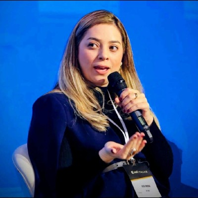
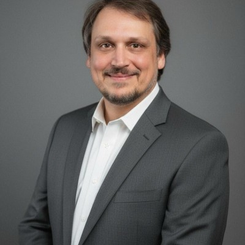
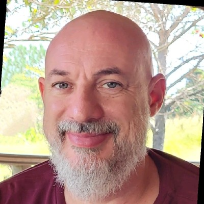
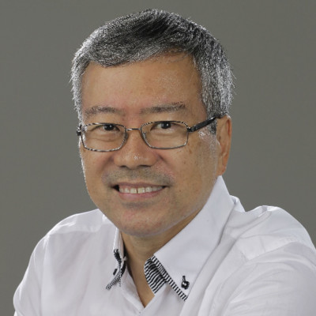
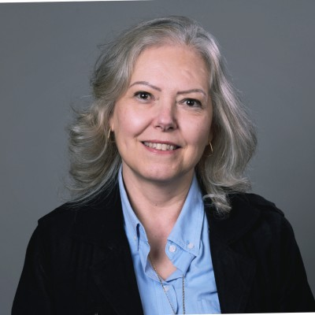
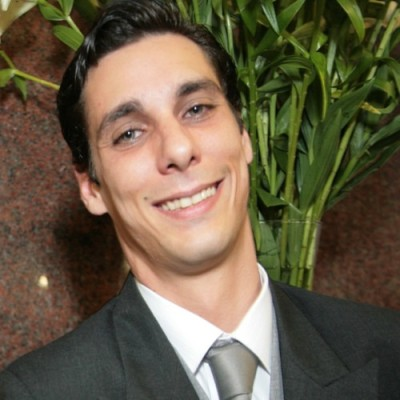

A ACMP Brasil é dirigida por uma equipe voluntária de profissionais reconhecidos no mercado brasileiro de Gestão de Mudanças. Nossa diretoria é composta por especialistas que dedicam tempo e expertise para fortalecer a comunidade, promover a profissão e conectar o Brasil à rede global da ACMP.
Nesta página você encontra a diretoria atual, os ex-diretores que ajudaram a construir o capítulo ao longo dos anos e os fundadores que tornaram este projeto possível.
Diretoria Atual
Profissionais que lideram a ACMP Brasil no mandato vigente.
MA
Michel de Arruda Pires
Presidente
Líder da ACMP Brasil no mandato vigente. Profissional de Gestão de Mudanças com trajetória em transformações organizacionais. Veja o currículo completo no LinkedIn.

IP
Isis Moda Pires
Diretora de Marketing e Eventos
Responsável pela curadoria de eventos, comunicação e marketing do capítulo. Profissional com sólida experiência em Gestão de Mudanças. Veja o currículo completo no LinkedIn.

FS
Fabiano Sannino
Diretor Financeiro
Responsável pela gestão financeira, prestação de contas e sustentabilidade do capítulo brasileiro da ACMP. Veja o currículo completo no LinkedIn.
Diretorias Anteriores
Profissionais que conduziram a ACMP Brasil em mandatos passados e contribuíram para o seu crescimento.

EZ
Emerson Zuccherato
Ex-Diretoria
Atuou na diretoria da ACMP Brasil em ciclo anterior. Profissional com experiência em Soluções em IA, Odoo Partner, Transformação Digital, Project Management e Change Management.
IP
Isis Moda Pires
Ex-Diretoria
Atuou na diretoria do capítulo em ciclo anterior. Continua contribuindo com a ACMP Brasil na gestão atual como Diretora de Marketing e Eventos. Veja o currículo completo no LinkedIn.
DA
Daniel Druwe Araujo
Ex-Diretoria
Atuou na diretoria da ACMP Brasil em ciclo anterior, contribuindo para iniciativas estratégicas do capítulo. Veja o currículo completo no LinkedIn.

AK
Armando Kokitsu
Ex-Diretoria
Atuou na diretoria do capítulo em ciclo anterior, deixando legado em iniciativas educacionais e de comunidade. Veja o currículo completo no LinkedIn.

GE
Geni Elisabeth Esteves
Ex-Diretoria
Atuou na diretoria da ACMP Brasil em ciclo anterior, contribuindo para o fortalecimento institucional do capítulo. Veja o currículo completo no LinkedIn.

AF
Adrian Ferraz
Ex-Diretoria
Atuou na diretoria do capítulo em ciclo anterior, contribuindo para iniciativas de comunidade e profissionalização da disciplina. Veja o currículo completo no LinkedIn.
FS
Fabiano Sannino
Ex-Diretoria
Atuou na diretoria da ACMP Brasil em ciclo anterior. Segue contribuindo no mandato atual como Diretor Financeiro do capítulo. Veja o currículo completo no LinkedIn.
Fundadores
Profissionais visionários que tornaram possível a criação do capítulo brasileiro da ACMP.
Nome do(a) Fundador(a)
Fundador(a)
Um dos profissionais pioneiros que articularam a criação do capítulo brasileiro da ACMP, conectando a comunidade local à rede global. Breve biografia a ser preenchida.
Nome do(a) Fundador(a)
Fundador(a)
Co-fundador(a) da ACMP Brasil, atuou na concepção da missão, visão e valores que guiam o capítulo. Breve biografia a ser preenchida.
Nome do(a) Fundador(a)
Fundador(a)
Co-fundador(a) da ACMP Brasil, contribuiu para os primeiros passos institucionais do capítulo no país. Breve biografia a ser preenchida.
Quer fazer parte da história da ACMP Brasil?
Associe-se ou candidate-se ao trabalho voluntário e construa esta comunidade conosco.